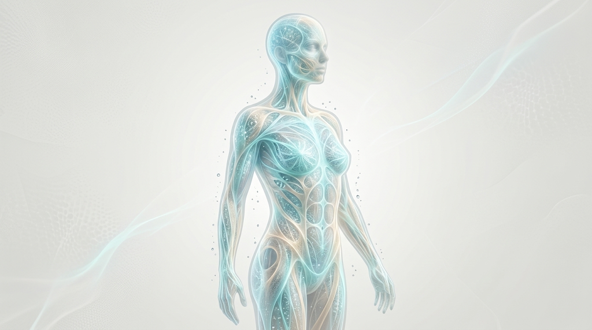
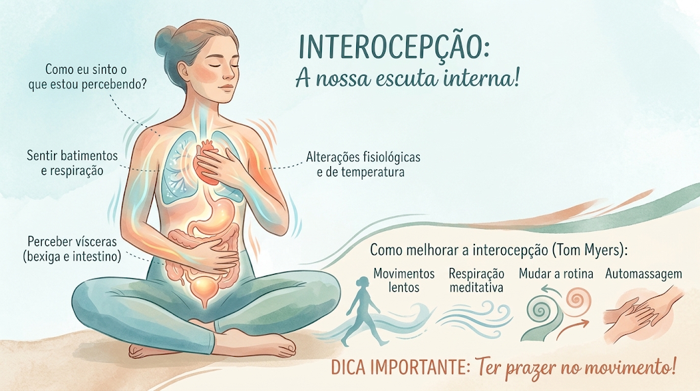
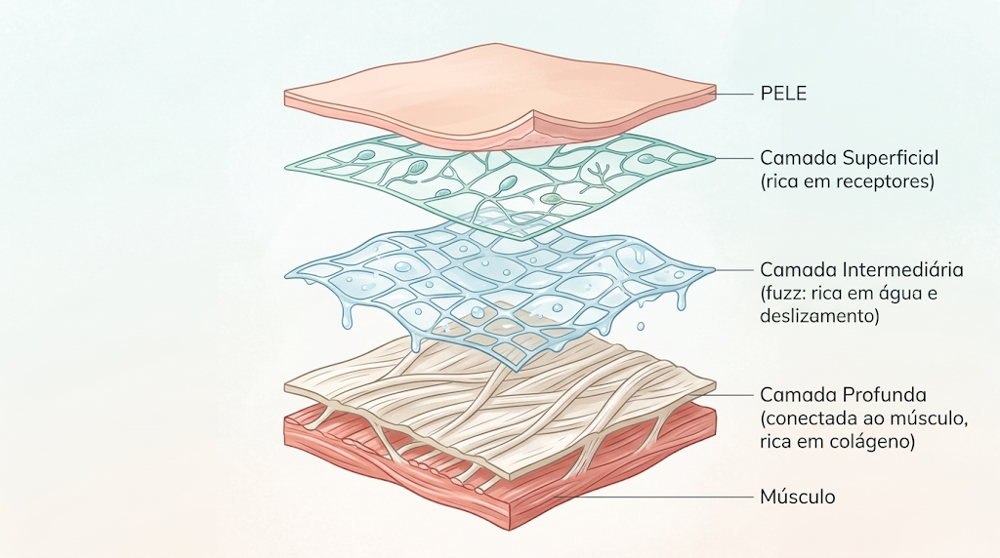
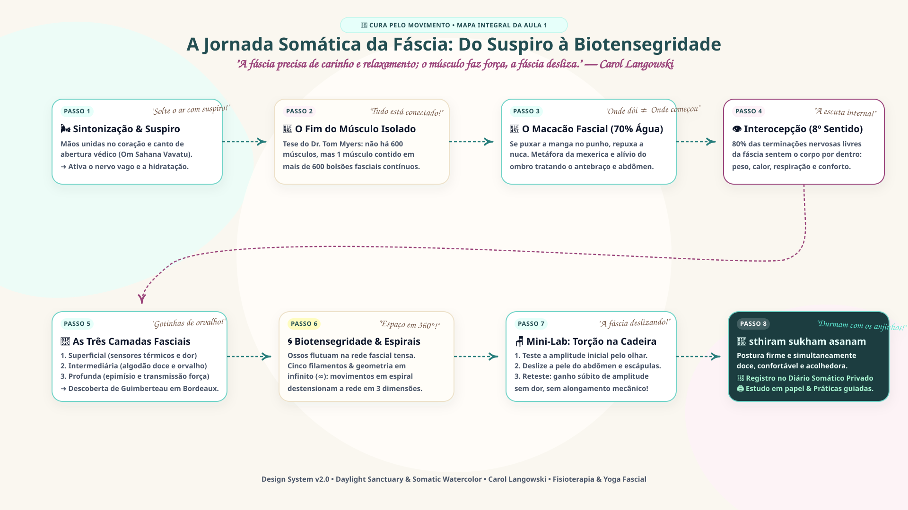

Estruturas Rígidas
Ossos e cartilagens articuladas. Não funcionam como colunas empilhadas de concreto, mas como espaçadores flutuantes na tensegridade.
Bem-vinda ao seu guia digital de apoio da Aula 1. Aqui você encontra as pontes entre a fisioterapia integrativa, o acolhimento do Yoga e a inteligência viva da sua rede corporal.
"Mãos unidas em frente ao coração... Solte o ar com um suspiro relaxando o peito e a mandíbula."

"Não temos 600 músculos no corpo, mas sim um único músculo contido em mais de 600 bolsões fasciais."
Ossos e cartilagens articuladas. Não funcionam como colunas empilhadas de concreto, mas como espaçadores flutuantes na tensegridade.
Músculos e tendões dinâmicos. Eles geram a força motriz e precisam de contração e relaxamento pontual.
A grande rede: é aqui onde moram as dores crônicas, as tensões acumuladas, mas também onde mora a cura pelo movimento.
Carol compartilhou a história fascinante do cirurgião francês Dr. Jean-Claude Guimberteau, pioneiro que colocou uma microcâmera intraoperatória sob a pele de pacientes vivos. Ele revelou pela primeira vez ao mundo que a fáscia viva não é uma lâmina branca seca e inerte como se ensinava em livros antigos de anatomia morta, mas uma teia cintilante e tridimensional de gotinhas de orvalho e microvacúolos que deslizam e se adaptam dinamicamente a cada respiração!
Pense na fáscia como um macacão de tecido elástico de corpo inteiro. Se você puxa a manga no punho, você sente a tensão refletir nas costas e na nuca. Onde dói quase nunca é onde o problema começou.
Um verdadeiro oceano interno. Sem hidratação celular e deslizamento, a fáscia cola como velcro seco.
Recobre nervos, vasos, vísceras, músculos e cápsulas articulares em perfeita continuidade.
A fáscia não responde a impactos bruscos; ela responde à deformação lenta, respeitosa e prazerosa no ásana.
É onde o estresse se cristaliza fisicamente e onde a respiração profunda promove a autorregulação.
A lição de casa que a Carol ensinou na aula: pegue um disco de algodão cosmético e tente separar as duas faces devagar, sem rasgar.
💡 "Entre a face colada na pele e a face colada no músculo surge um algodão doce tridimensional com gotinhas de orvalho: é a sua fáscia intermediária!"
Carol explicou como a fáscia abraça o corpo em todas as escalas: "Pensem em uma tangerina ou mexerica. O gominho inteiro é como se fosse um músculo, envolto por uma película branca. Mas dentro do gominho, cada uma daquelas gotinhas minúsculas de suco também tem sua própria pelezinha protetora. A fáscia faz exatamente isso: ela envolve desde o corpo todo até cada célula individual, garantindo que nada atrite ou se rompa."
Na aula, Carol narrou o caso real de um aluno com fortes dores no ombro e na região torácica: "Se o aluno não consegue mover o braço pela dor, nós não vamos forçar o ombro! Nós deslizamos a fáscia do antebraço, soltamos a pele do abdômen e liberamos a caixa torácica à distância. Puxando a roupa interna do lado certo, o ombro desarmou a tensão e ele recuperou a amplitude completa para voltar a jogar tênis!"

Perdemos o hábito de ouvir o corpo porque prestamos atenção demais no mundo externo (barulho, telas, exigências). A fáscia superficial é o rádio receptor que nos avisa quando precisamos de pausa, calor, água ou carinho.
Carol ensina que bocejar ou soltar um suspiro profundo durante a prática não é sinal de sono ou preguiça! É a prova viva da autorregulação parassimpática: o corpo reconhece a segurança, reduz os hormônios de alerta e permite que a fáscia absorva água e volte a deslizar.
Cada camada pede um tipo específico de carinho e estímulo. Clique nas abas para ver o que fazer:

É a pele interna. Densamente inervada, detecta temperatura, toque, vibração e regula o tônus do sistema nervoso central. Quando está tensa, gera sensações de confinamento e rigidez matinal.
🛋️ Rolo de liberação suave e automassagem: Nada de dor excruciante! O estímulo deve ser gentil para convencer o sistema nervoso a soltar a guarda.
Recobre os ventres musculares. Rica em fasciacytes que secretam ácido hialurônico de alta viscosidade para garantir que os músculos deslizem suavemente sem atrito mútuo.
🐱 O Espreguiçar (Pandiculação): Movimentos lentos e sonoros ao acordar, imitando gatos e cães. Espreguiçar-se com calma hidrata as fibras e desperta a fluidez.
Intimamente conectada aos músculos e ao periósteo ósseo. Muito densa e rica em colágeno, ela transfere a energia mecânica de um segmento para o outro em frações de segundo.
🌀 Balanceio & Movimento Multidirecional: Balançar os braços, transferir peso de forma elástica e alongar dinamicamente sem travar a respiração.
"A forma segue a função. A função altera-se com a forma."
A fáscia não é estática: é uma fábrica celular viva em constante regeneração tecidual.
Os tecelões do corpo: produtores diretos das fibras de colágeno e elastina que sustentam a arquitetura.
Os hidratadores: produzem ácido hialurônico, criando o lubrificante que impede as camadas de colarem.
Os cirurgiões: responsáveis pela cicatrização e por manter o tônus basal em áreas submetidas a esforço.
O início da redução natural na produção de colágeno pelo corpo. É quando os movimentos multidirecionais se tornam essenciais.
A produção cai a uma fração do que era. Mas a boa notícia da ciência: o movimento estimula os fibroblastos a continuarem produzindo!
Aumenta a viscosidade, deixando a substância fundamental densa e enrijecida.
Liquefaz a matriz, promovendo deslizamento, alívio de dor e abertura.
Evita o "congestionamento" das vias neurais e hidrata os tecidos.
Libera óxido nítrico, desarmando tensões crônicas e relaxando as paredes vasculares.
Carol compartilhou na aula o cuidado fundamental com cicatrizes (como cesáreas, cirurgias de joelho ou mastectomia): quando o tecido sofre um corte cirúrgico, os miofibroblastos entram em ação de emergência e produzem um colágeno denso e espesso para fechar a ferida. Se essa cicatriz não for carinhosamente tocada, massageada e mobilizada, ela cria uma âncora de tração que encurta toda a fáscia ao redor, gerando dores em locais distantes. O carinho e o movimento somático suave reensinam as fibras a deslizarem!
O modelo dos bastões e elásticos: os ossos flutuam na fáscia, distribuindo as forças de sustentação por todo o sistema.
Faça agora onde você está sentada! Esse é o teste que a Carol conduziu na aula para comprovar o ganho de amplitude através da fáscia:
Os conceitos científicos da nossa aula traduzidos em linguagem simples e acolhedora para consultar sempre que precisar.
Um mapa visual desenhado à mão que sintetiza toda a progressão somática da Aula 1 — da sintonização neurovagal e descobertas científicas de Bordeaux até o acolhimento do Sthiram Sukham Asanam.

"A postura deve ser firme, estável e simultaneamente doce, acolhedora e confortável."
Carol orientou a assistir aos vídeos do módulo de introdução e se aprofundar no conteúdo até a aula de Trilhos Anatômicos antes do nosso próximo encontro ao vivo.
Traga seus estudos de caso, dúvidas sobre o corpo e sensações para o nosso grupo do curso. O movimento cura quando é compartilhado com afeto.
O que o seu corpo sentiu durante a prática e o teste da torção? Suas anotações ficam salvas somente no seu navegador.